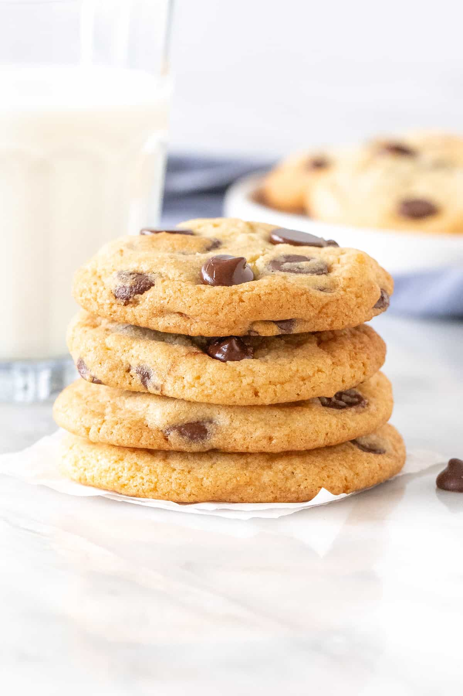

Chocolate Chip Cookies

Description
Everyone loves cookies! This recipe will help spread the love of chocolate chip cookies!
Ingredients
- 1 cup (2 sticks) unsalted butter, softened
- 1/2 cup granulated sugar
- 1 1/2 cups packed brown sugar
- 2 large eggs, room temperature
- 2 teaspoons vanilla extract
- 1 teaspoon baking soda
- 2 teaspoons hot water
- 1/2 teaspoon salt
- 3 cups all-purpose flour
- 2 cups semisweet chocolate chips
Steps
- In a stand mixer with paddle attachment, cream together butter, sugar and brown sugar until smooth.
- Beat in the eggs, one at a time, then add in the vanilla.
- Dissolve baking soda in hot water. Add to batter along with salt.
- Remove bowl from stand mixer and stir in flour and chocolate chips.
- Wrap dough in plastic wrap and chill for at least 1 hour or overnight.
- When ready to bake, preheat oven to 350 F. Prepare cookie sheets with silpat or parchment paper.
- Remove roughly 1-2 tablespoons of dough (depending on the size of cookie you prefer) and roll into a ball with your hands. Drop onto prepared pans.
- Bake for about 8-10 minutes in the preheated oven, or until edges are barely browning.
Home